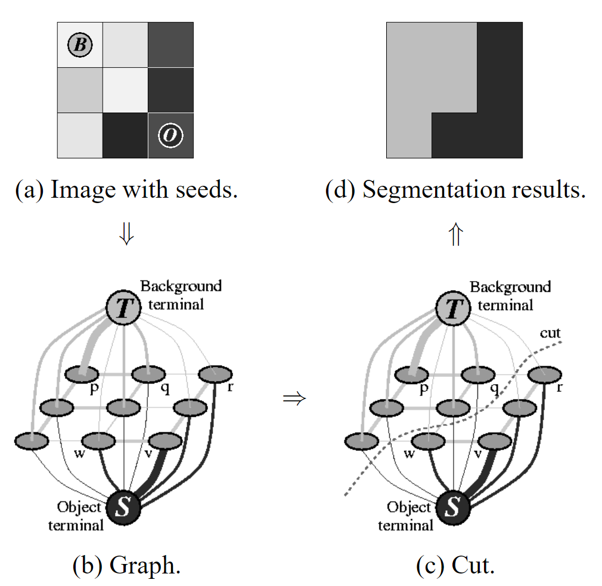

GraphCut
基础信息
文章标题：Interactive Graph Cuts for Optimal Boundary & Region Segmentation of Objects in N-D Images
文章链接：https://www.csd.uwo.ca/~yboykov/Papers/iccv01.pdf
发表时间：2001-07
背景
创新点简介
用户标记部分像素作为“目标”或“背景”，为图像分割提供硬约束。此外，利用图像的边缘信息和区域信息作为软约束。图割方法是一种全局最优的N维图像分割方法。Graph cuts是一种能量优化算法，应用于前背景分割。它把图像分割问题当作图的最小割（min cut）问题。

详细内容
【具体步骤】
- 首先，需要用户明确指出少量背景像素B和前景目标像素O。
- 然后将图像建立为图（Graph），像素就是图上的节点(Node)
- 有两个特殊的节点是T节点（background terminal, 表示背景）以及S节点(Object Terminal, 表示前景）
- 在所有节点之间建立连接。图像像素之间的连接称作n-links，像素到特殊节点之间的连接称作t-links
- 为所有的连接赋以能量或权重。t-links的能量代表着一个像素有多么像前景或背景，所有下图中那些已经被标注为前景或背景的像素对应的t-links很粗。n-links的能量约束着像素之间是否会被分配为不同的区域，下图中如果相邻节点越有可能被分开，其连接越细，能量越小。
- 为了分割前景和背景，文章最后会采用min-cut方法，寻找一条能够使得被切开的连接的总能量最小的缝隙
引用